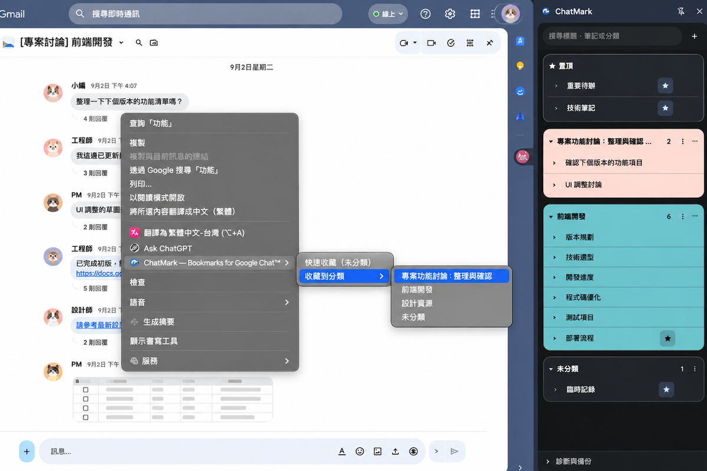
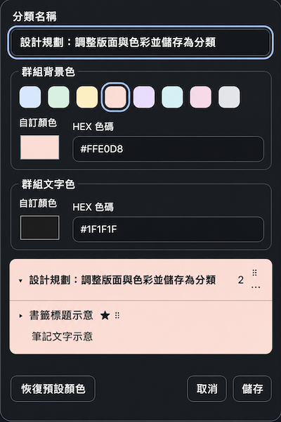

收藏重要訊息，
隨時回到討論。
連結、決議、待辦事項，常常藏在長長的對話裡。ChatMark 讓你在 Gmail 內嵌的 Google Chat 收藏訊息，用側欄整理，需要時直接回到原處。
ChatMark 是獨立開發的非官方擴充功能，並非由 Google 提供、贊助或背書。

讓重要的對話更好找
- 從訊息直接建立收藏
- 在 Google Chat 訊息上按右鍵，快速收藏到未分類，或直接指定一個分類。標題會自動取自訊息內容；同一段對話中的不同訊息也能分別收藏。若重複收藏，提示可讓你跳到既有收藏。
- 分類完整管理
- 新增分類、重新命名或刪除不再需要的分類，也能拖曳調整分類順序。從「⋯ → 編輯分類」設定整張卡片的背景色與文字色，讓不同主題更容易辨識；展開或收合分類，讓側欄保持清楚。
- 搜尋與編輯收藏
- 搜尋收藏標題、分類名稱和筆記，標題符合的結果會優先顯示。可修改標題與筆記、刪除收藏，或將常用收藏置頂；置頂項目會同時出現在側欄頂端與原分類。
- 拖曳整理順序
- 拖曳收藏調整同一分類內的順序、移到其他分類，或排列置頂項目。分類展開或收合的狀態會保留。
- 操作錯誤可復原
- 刪除分類前會顯示其中的收藏筆數並要求確認；刪除收藏或分類後可立即復原。剛收藏的訊息也能從提示中復原。
- 一點，回到原始訊息
- 從側欄點開收藏，在 Gmail 返回保存的訊息位置，接著閱讀前後文。
用顏色辨識不同分類
從分類右上角的「⋯ → 編輯分類」設定整張卡片的背景色與文字色。背景色可選常用色，兩種顏色都能用選色器或六位 HEX 色碼精確設定。
編輯時可先預覽標題、收藏與筆記，儲存後才會套用；需要時可一次恢復兩種預設顏色。「未分類」維持原本外觀。

收藏留在你的瀏覽器
收藏資料保存在目前 Chrome 使用者設定檔，不會自動跨裝置同步，也不會自動上傳給開發者。你可以從側欄的診斷區手動匯出整份收藏庫的 JSON 備份；還原時會以備份內容取代目前收藏庫。這是個人備份，不支援選擇分類分享或合併匯入。
閱讀完整隱私權政策使用前先了解
收藏功能目前只支援 Gmail（mail.google.com）裡的 Chat 分頁與對話畫面。請從 Gmail 左側導覽列開啟 Chat，再於訊息上按右鍵收藏。獨立的 chat.google.com 網站目前不支援。開啟收藏時，你仍需要使用有權限查看該對話的 Google 帳號。
常見問題 Q&A
ChatMark 是什麼？
ChatMark 是一款 Chrome 擴充功能，用於收藏、分類和搜尋 Gmail 內嵌 Google Chat 的訊息，並從側欄返回原始對話。
如何收藏 Google Chat 訊息？
在 Gmail 左側開啟 Chat，進入對話後對目標訊息按右鍵，選擇「快速收藏（未分類）」或「收藏到分類」。收藏後可從 ChatMark 側欄找到該訊息。
可以在獨立的 chat.google.com 網站使用嗎？
目前不支援。收藏功能只適用於 Gmail（mail.google.com）內的 Chat 分頁與對話畫面。
分類與收藏可以怎麼整理？
可以新增、重新命名、刪除及拖曳排序分類，也能為一般分類自訂整張卡片的背景色與文字色。收藏可拖曳調整順序或移到其他分類；側欄還支援搜尋、編輯標題與筆記，以及置頂常用收藏。
如何設定或重設分類顏色？
在一般分類右上角選擇「⋯ → 編輯分類」，可選常用背景色，或用選色器、六位 HEX 色碼設定背景色和文字色。編輯時可預覽整張卡片，按「儲存」後套用；「恢復預設顏色」會同時重設兩種顏色。「未分類」不可改色。
點選收藏會回到哪裡？
點選側欄中的收藏，會在 Gmail 返回該則訊息的位置，以便查看前後文。你仍須使用有權限查看該對話的 Google 帳號。
收藏會同步到其他裝置嗎？
不會。收藏保存在目前的 Chrome 使用者設定檔，不會自動跨裝置同步，也不會自動上傳給開發者。詳見隱私權政策。
如何備份或還原收藏？
可從側欄的診斷區手動匯出整份收藏庫的 JSON 備份。還原會以備份內容取代目前收藏庫，操作前請先保留需要的資料。詳見備份與還原說明。
ChatMark 是 Google 官方產品嗎？
不是。ChatMark 是獨立開發的非官方擴充功能，並非由 Google 提供、贊助或背書。
一起讓 ChatMark 更好用
遇到問題，或有想要的功能？歡迎到 GitHub Issues 留下回饋。公開留言請避免包含私人對話或完整備份。
Google Chat 和 Gmail 是 Google LLC 的商標，其使用受 Google Permissions 規範約束。